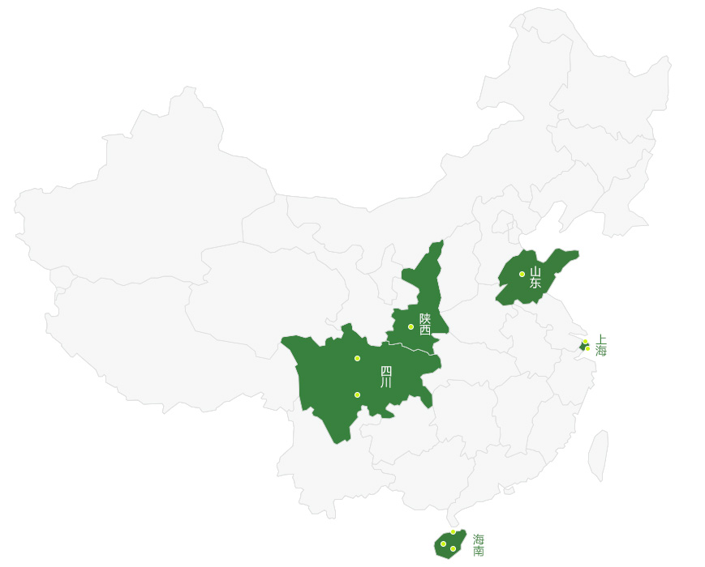
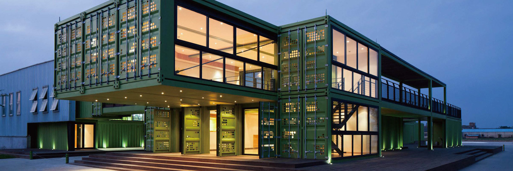
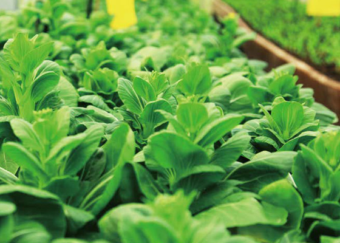
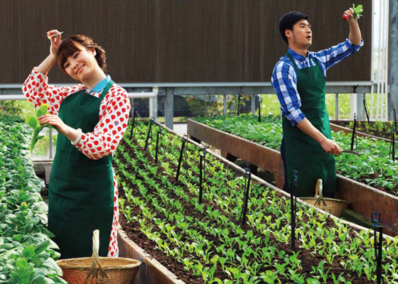
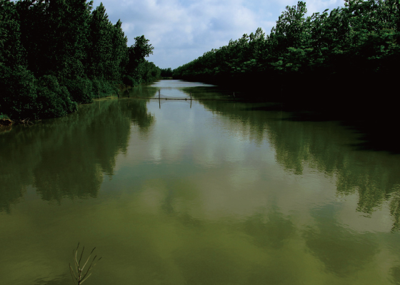
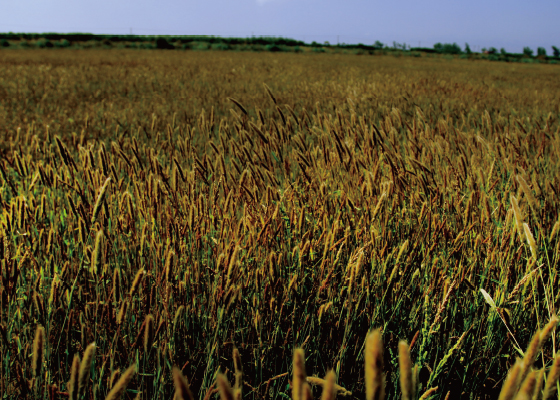

全国种植基地
PLANTING BASES
NATIONWIDE
为了确保全国会员一年四季都能吃上新鲜、健康的有机蔬菜，多利横跨全国不同经纬带，在上海、山东、陕西、四川、海南 五大省市建立了九大农业基地，种植总面积达3万多亩。此外，多利还在全国实施“分品类跨区域布局”战略，按种植产品的 不同属性，进行相应的地理布局真正做到有机蔬菜新鲜直供。
多利农庄 上海基地
浦东基地
该基地位于季风入风口，空气新鲜，土壤肥沃，较少污染的上海市浦东新区（原上海南汇）大团镇，亚热带湿润 季风气候。2005年始建，总占地面积1,750亩，拥有通过有机认证的土地近1,000亩；总投资超过2.5亿 元，是市、区两级政府的重点支持项目。历经四年多土壤无害化有机转换及6600万元的河道和灌溉用水改良投入，从 源头上保证了有机蔬菜的卓越品质。
该基地是上海著名景点，也是国家AAA景点。其风景优美，拥有加拿大式的木屋会所，世博德国馆原班设计团队打造的 全新概念的集装箱接待中心，在这个有机生态园里，人们可以度假观光、旅游休闲，还可以现场采摘有机蔬果，体验健 康的有机生活方式。
-

多利农庄·浦东基地
种植基地
-

多利农庄·浦东基地
采摘基地
崇明基地
多利农庄崇明基地位于上海崇明岛，2011年8月12日,多利农庄与上海崇明县签约,在崇明打造都市低碳有机 农业示范基地,该基地总占地面积1,620亩，投资超过2亿元人民币，是科技部和上海市合作的低碳农业研发与 示范项目，已经成为低碳有机农业示范区。
-

多利农庄·崇明基地
种植基地
-

多利农庄·崇明基地
种植基地